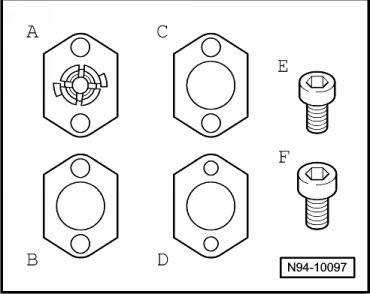
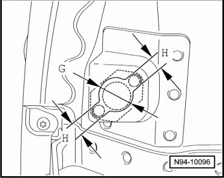
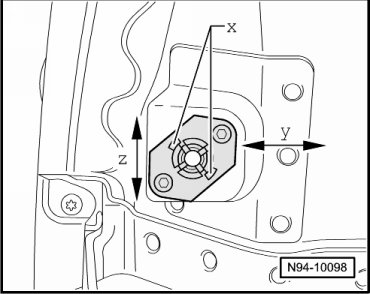

Adjustable Tail Lamp Assembly Carrier In Side Panel
Tail Lamps
Adjustable Tail Lamp Assembly Carrier in Side Panel
• By e.g. damage to rear side panel or by replacing tail lamp assembly, it may be necessary to adapt tail lamp assembly by reason of unacceptable gap dimensions (body to tail lamp assembly). For this, an adjustable tail lamp assembly carrier must be installed.
• For technical reasons, it is not possible to offer a side panel with hole-punched holder for tail lamp assembly if repairs are required. In this case, a specially developed adjustable tail lamp assembly carrier is available, which must also be installed.
The adjustable lamp carrier consists of

• 1x- A - Clip mount 1.2 mm with plastic clip nut
• 2x- B - spacer pieces, 1 mm
• 2x- C - spacer pieces, 0.5 mm
• 1x- D - threaded plate
• 1x- E - mounting bolt
• 1x- F - mounting bolt
Prepare side panel for installation of adjustable tail lamp assembly carrier

- Place one spacer piece positioned at center on retaining plate and mark the diameters - G - and - H -.
- Drill holes to dimensions - G - = 8 mm and - H - = 22 mm using a center-bit.
- Perform the required corrosion protection measures.
Installing adjustable tail lamp assembly carrier

- Place clip mount with plastic clip nut behind mounting plate.
- Place adjustment shims underneath as necessary, press on threaded plate with internal thread behind body plate and screw in mounting bolts so that the carrier can still be positioned --> [ Adjustable Tail Lamp Assembly Carrier Assembly Overview ] Adjustable Tail Lamp Assembly Carrier Assembly Overview.
- Position carrier at center.
- Tighten the mounting screws to the tightening specification --> [ Tail Lamps ] Tail Lamps.
- Install tail lamp assembly --> [ Side Panel Tail Lamps ]. Side Panel Tail Lamps
- Check gap dimensions --> [ Tail Lamp Gap Dimensions ] Tail Lamp Gap Dimensions.
- If required, remove tail lamp assembly again, position lamp carrier anew or adjust using spacer pieces.
• If it is necessary, the plastic clip nut in clip mount can be shortened at the side overhangs - x -. This increases the adjustment range.